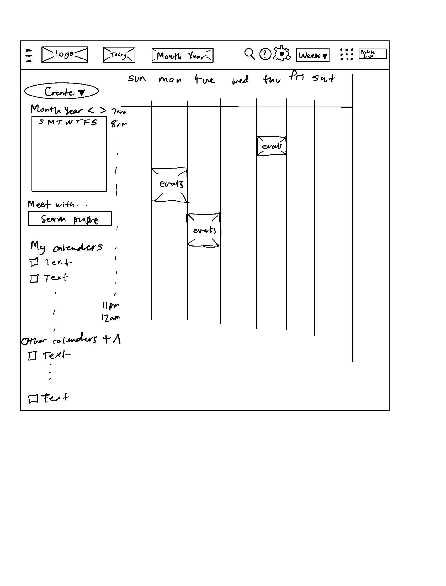
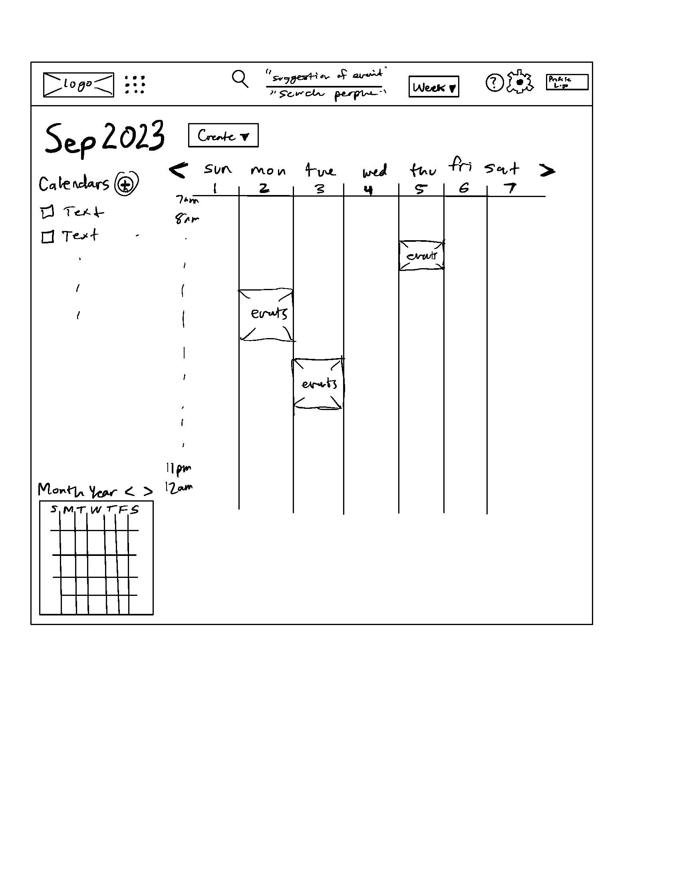

-
Using the favorite website you chose in homework 1, create a wireframe for one page of it using pen/paper, PowerPoint, or any your tool of choice. (use the 'img' tag!) Make sure to let us know what the name of your website is (Use the 'p' tag!)
Google calender 
-
Try to improve the website you've chosen, and create a redesigned wireframe of one page for the same website using the principles of visual hierarchy that you learned from the article.

-
What is the goal of the website? Who is it intended for? How does the design accomplish this? Write 2-3 sentences answering these questions. (Use the 'p' tag again!)
The goal of the website is to display events that a person has for the coming future and to make future plans. It is inteded for people that want to organize their work or life into events they can remmember. The design accomplishes this by having events be displayed in a way that pops out to you as soon as you go to the page. This is a good design as most people just want to know what is coming up fast. The design also allows you create new events intuitively
-
Write 2-3 sentences about what problems your redesign addressed, and how it solved them.
The problems that my redesign tried to solve was that even though events are clearly seen in the page, there is an issue with cluttering and information being replicated through the page. So for one I cleaned up the upper bar to have less clutter and make the search function multipurpose to be able to search people. This allows me to combine the function of the search that was there before with the people search function. I also got rid of some other information such as the "Today" icon which didn't seem to do anything. I also moved the monthly calender to the bottom left to reduce confusion and have the user be more focused on their weekly events. Then if they would like to delve into other days of the month then they can find it there as well.
NOTE: Make sure to include the wireframe images in the website and don't just put it in your assets folder!
Your wireframes should look something like this: